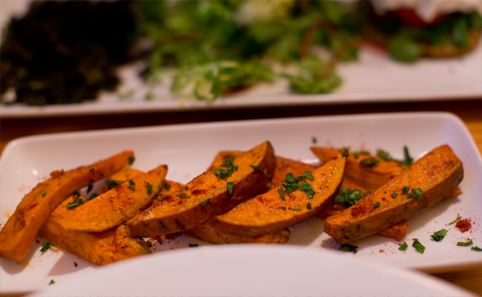
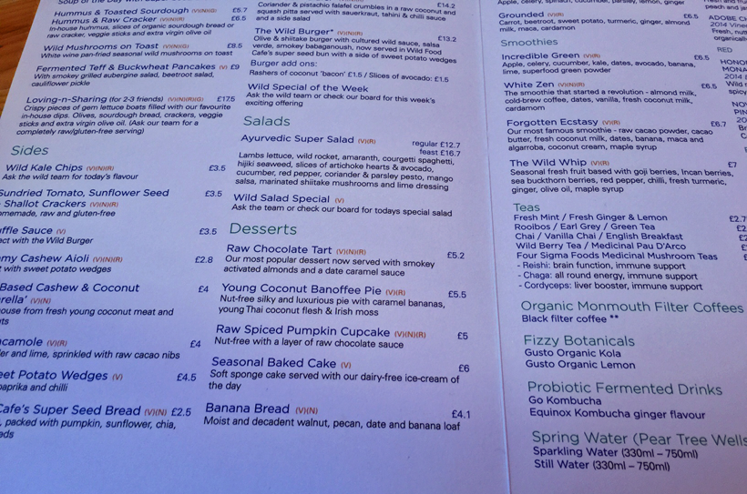
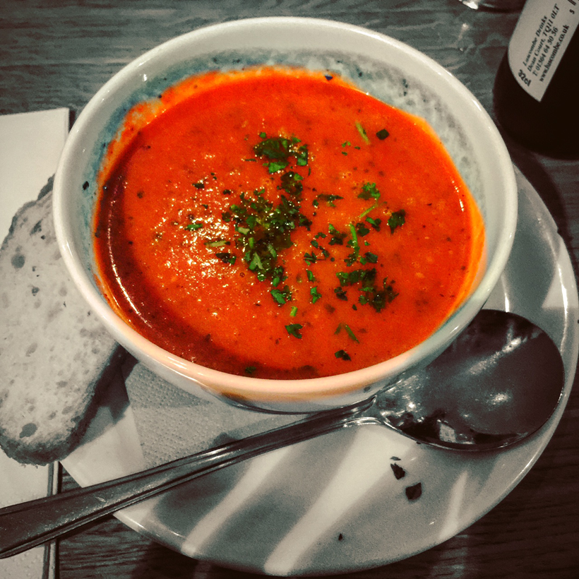

My London Trip
Mildred's - One of my favorite places! We stumbled in here the day we arrived, exhausted, not having slept in a VERY long time, but starving. This place delivered on delicious, cozy, healthy, casual, friendly dining. Love.
Wild Food Cafe - This cafe was recommended by my friend.wild This super friendly, artsy, cozy, healthy, new age-y, magical little spot is a gem. The salads are everything you dream of and the banana bread for dessert was literally the best banana bread I have ever tried. It tasted like a cinnamon roll. So yes, I will say it again, this spot is MAGICAL. Video about this cafe is posted below in this page.
Vanilla Black - Sadly, we missed this spot. But this gourmet food vegetarian - vegan friendly - restaurant is on my list for next time.
Le Pain Quotidien (Covent Garden or waterfront locations my faves) - Ahhh, my GO-TO spot here in the USA (LA, NYC, DC) - I was SO excited to try a UK Le Pain! And we went back again and again. Coffee, matcha, vegan soups and salads, tartines, chili and more. I love Le Pain so much.
Ethos - Another one we missed, but I want to try next time.
26 Grains - I was SO sad to miss this porridge haven, with vegan options. Next time!
Pont St - The restaurant by Sophie Michell in the Thompson Belgraves Hotel. We went for breakfast and I had the BEST porridge I have ever tried. I love Sophie's healthy spin that she adds to her menus. Not all vegan, but vegan options for sure -- just ask your waiter if you have questions. Tons of juices, fruit, porridge and amazing non-dairy lattes for breakfast. Breakfast felt kinda fancy, but also very friendly and elegantly-casual.
Sea Containers - Delicious food - not terribly vegan friendly at first glance -- but they pulled it off and I ended up eating my weight in those roasted EVOO carrots. And that was just a side dish!
Gail's (fruit + coffee) - We popped in here for a light breakfast. I had a dreamy soy latte and a big fresh fruit salad. Tiny spot but loads of happy energy in there.
Sally Clarke - Notting Hill (picnic food - juice and fruit and bread) - We popped in here for some snacks. I found grapefruit juice, fresh fruit and bread. Gourmet little store. In spring and summer this would make a great picnic- eats pickup spot before heading out to Kensington Gardens just a little stroll away.

Wild Food Cafe sweet potato wedges..

Wild Food Cafe menu snap...

Mildred's amazing tomato soup..
Back To Home
Where To Stay
Places To Visit
My Visit To Chelsea Football Club Stadium